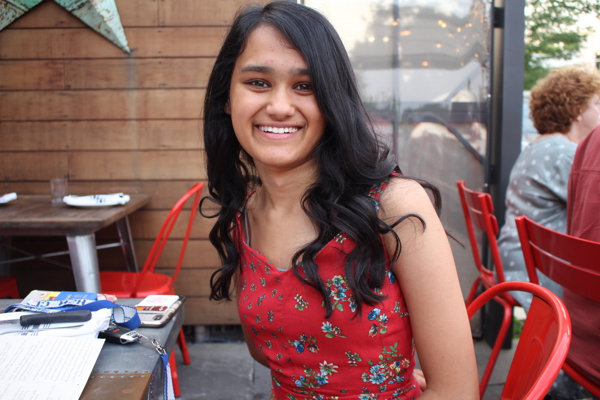

I'm Aarushi Parashar, a Freshman majoring in Computer Science and minoring in Applied Mathematics and Operations Research and Management Sciences at Cornell University. Among my interests are neural networks,cognitive computing development, cloud and distributed computing, autonomous systems, and software engineering. In school, I am currently a software engineer at Cornell Mars Rover(CMR), a project team that designs and builds an autonomous rover. This summer I am a research intern at IBM working on building various neural network models to predict whether a small molecule will bind to a protein. This is currently my temporary website, so stay tuned for the official one to replace this sometime soon!